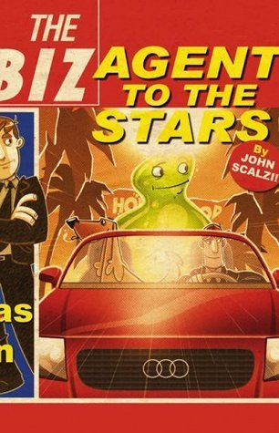

Agent to the Stars
- Read on 2021-12-20
- Rating: ️️️️️
- Format: 🎧 (8 hours 49 minutes)
I've read a handful of books by John Scalzi, and each time I have, I've enjoyed it. They're not elaborate, or super in-depth, but very entertaining and approachable science fiction. This one is no different than the others. In short, a middleground Hollywood agent ends up with an unusual client, and they try to navigate life and typical Hollywood drama. I have several moments of laughing out loud - which also feels like something I do in each of his books. I obviously need to see what else Scalzi has written.
- Prior: This Is How You Lose the Time War
- Next: Circe